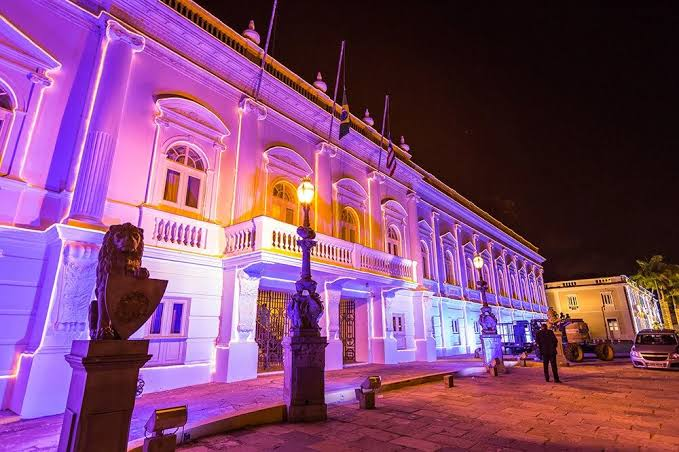

Conhecido por seus casarões coloniais e azulejos portugueses, o Centro Histórico é um dos lugares mais importantes da cidade.
Os casarões do Centro Histórico de São Luís são importantes símbolos da história e da cultura maranhense. Construídos principalmente durante os séculos XVIII e XIX, eles representam a arquitetura colonial portuguesa e são conhecidos por suas fachadas coloridas, janelas grandes, varandas e pelos famosos azulejos portugueses. Essas construções mostram como era a vida em São Luís antigamente, quando a cidade tinha grande importância econômica e comercial. Muitos casarões pertenciam a famílias ricas e comerciantes da época.Além de sua beleza arquitetônica, os casarões guardam parte da memória da população maranhense. Atualmente, alguns funcionam como museus, centros culturais, lojas e espaços de visitação, enquanto outros precisam de cuidados e restauração para preservar sua estrutura. Em 1997, o Centro Histórico de São Luís recebeu o título de Patrimônio Mundial da UNESCO, reconhecendo sua importância histórica e cultural. Portanto, preservar os casarões é uma maneira de valorizar nossa identidade, proteger nossa história e manter viva a cultura do Maranhão para as próximas geraçõe.
0
Palácio dos Leões
Um dos principais símbolos históricos do Maranhão, localizado no centro de São Luís.
O Palácio dos Leões é um dos principais pontos turísticos e históricos de São Luís, no Maranhão. Localizado no Centro Histórico, o edifício é a sede do Governo do Estado e representa uma parte importante da história política e cultural maranhense. Sua origem remonta ao século XVII, quando foi construído pelos franceses durante a ocupação da ilha, sendo posteriormente reformado e ampliado pelos portugueses. Seu nome está relacionado às esculturas de leões que decoram sua entrada, simbolizando força e poder. Além de sua importância administrativa, o palácio possui uma arquitetura imponente, com salões decorados, obras de arte, móveis antigos e objetos históricos. Atualmente, também é um espaço de visitação, permitindo que moradores e turistas conheçam um pouco mais sobre a história do Maranhão. Preservar o Palácio dos Leões é valorizar o patrimônio histórico e cultural de São Luís, mantendo viva a memória das gerações que contribuíram para a construção da identidade maranhense

0
Lagoa da Jansen
Um espaço conhecido por sua paisagem, natureza e opções de lazer.
A Lagoa da Jansen é um dos pontos turísticos e espaços de lazer mais conhecidos de São Luís, no Maranhão. Localizada em uma região urbana da capital maranhense, a lagoa é um importante patrimônio natural e ambiental da cidade, sendo frequentada por moradores e turistas que procuram um lugar para passear, praticar atividades físicas e aproveitar momentos de descanso. Seu nome é uma homenagem à família Jansen, tradicional na história maranhense. A região possui uma paisagem bastante característica, formada pela lagoa, áreas verdes, vegetação e construções ao seu redor, criando um contraste entre a natureza e o desenvolvimento urbano. Ao longo dos anos, o local passou por transformações e recebeu espaços destinados à convivência da população, como pistas para caminhadas, áreas de circulação, quadras esportivas e locais de alimentação. Durante o dia, muitas pessoas utilizam o espaço para caminhar, correr, andar de bicicleta e praticar exercícios físicos. Já no período da noite, a lagoa se torna um ambiente bastante movimentado, principalmente por causa dos bares, restaurantes e estabelecimentos que oferecem diferentes opções de lazer e gastronomia. Além de sua importância turística, a Lagoa da Jansen possui grande relevância ambiental, pois faz parte do ecossistema da cidade e abriga diferentes formas de vida, incluindo espécies de aves e outros animais. Por isso, sua conservação é fundamental para manter o equilíbrio ambiental e melhorar a qualidade de vida da população. Entretanto, a região também enfrenta desafios relacionados à poluição, ao descarte inadequado de resíduos e à preservação da qualidade da água, problemas que exigem atenção do poder público e participação da sociedade. Pequenas atitudes, como não jogar lixo no chão, respeitar a vegetação e utilizar corretamente os espaços públicos, contribuem para proteger esse patrimônio. A Lagoa da Jansen também se destaca por sua beleza, especialmente durante o pôr do sol, quando a paisagem se transforma e proporciona uma vista agradável para quem visita o local. Dessa forma, ela não é apenas um ponto turístico, mas também um importante espaço de encontro, lazer, convivência e contato com a natureza. Valorizar e preservar a Lagoa da Jansen significa cuidar de um dos lugares mais conhecidos de São Luís, proteger o meio ambiente e garantir que as futuras gerações também possam aproveitar suas belezas e sua importância para a cidade
0
Comidas típicas de São Luiz
Arroz de cuxá
Torta de camarão
Peixada maranhense
Juçara
Caranguejo toc-toc
Cultura de São Luiz
O Bumba Meu Boi é uma das manifestações culturais mais importantes e tradicionais do Maranhão, sendo considerado um dos maiores símbolos da identidade e da cultura maranhense. Essa manifestação popular mistura elementos de dança, música, teatro, religiosidade e tradições indígenas, africanas e europeias, formando uma expressão cultural única. Sua história é marcada por uma lenda que conta a história de um trabalhador chamado Pai Francisco, que decide atender ao desejo de sua esposa, Mãe Catirina, que estava grávida e desejava comer a língua de um boi muito especial de uma fazenda. Para satisfazer o desejo de sua companheira, Pai Francisco mata o animal, provocando a revolta de seu patrão. Depois de várias situações, o boi acaba sendo ressuscitado, dando origem a uma grande celebração. No Maranhão, o Bumba Meu Boi possui diferentes estilos, conhecidos como sotaques, que apresentam características próprias de música, dança, instrumentos, roupas e apresentações. Entre os principais estão os sotaques de matraca, zabumba, orquestra, baixada e costa de mão. Cada um possui sua identidade e contribui para a diversidade dessa tradição. Durante as festas juninas, principalmente nos meses de junho e julho, diversos grupos se apresentam em arraiais, praças e espaços culturais, reunindo moradores e turistas que desejam conhecer essa manifestação. Os brincantes utilizam roupas coloridas e bordadas, acompanhadas de instrumentos como matracas, pandeirões, tambores e instrumentos de sopro, dependendo do sotaque. O personagem principal é o próprio boi, que recebe uma estrutura decorada com bordados, miçangas, fitas e desenhos que representam a criatividade e a dedicação dos artesãos maranhenses. Além de proporcionar diversão e entretenimento, o Bumba Meu Boi possui um significado muito maior, pois representa a união das comunidades, a valorização das raízes culturais e a transmissão de conhecimentos entre diferentes gerações. Sua importância é tão grande que, em 2019, o Complexo Cultural do Bumba Meu Boi do Maranhão foi reconhecido pela UNESCO como Patrimônio Cultural Imaterial da Humanidade, destacando sua relevância para a cultura mundial. A manifestação também movimenta a economia local, contribuindo para o trabalho de artesãos, músicos, costureiros, dançarinos e diversos profissionais envolvidos na organização das apresentações. Dessa maneira, o Bumba Meu Boi não é apenas uma festa popular, mas uma representação da história, da criatividade, da fé e da resistência do povo maranhense. Preservar essa tradição significa proteger uma parte fundamental da identidade do Maranhão, garantindo que suas músicas, danças, histórias e costumes continuem sendo transmitidos às próximas gerações
 0
0